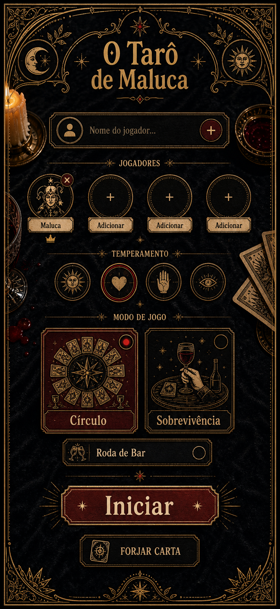
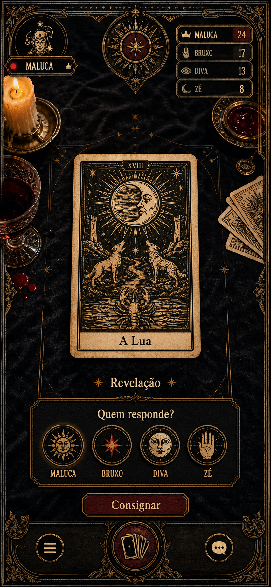
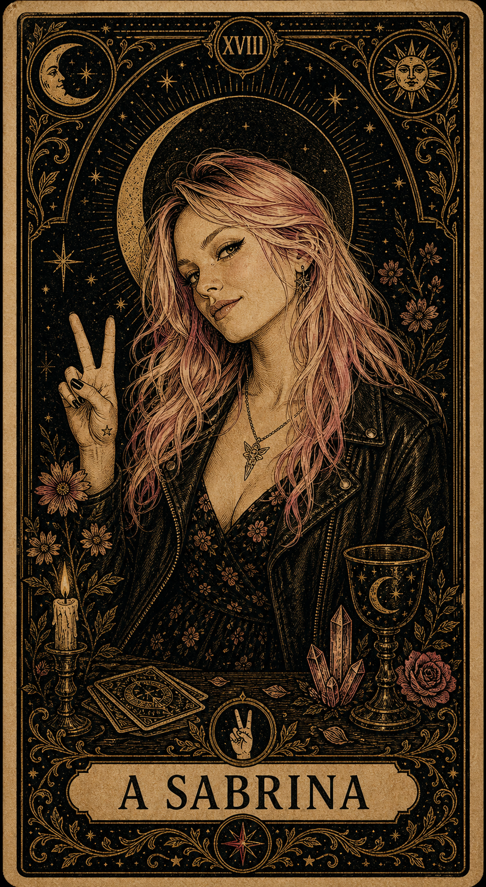
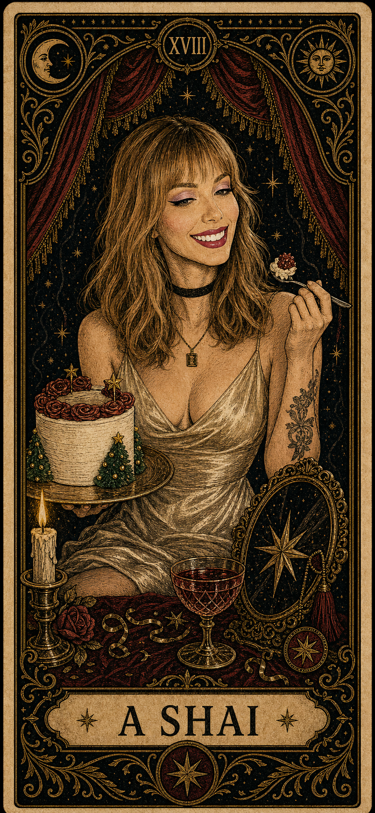
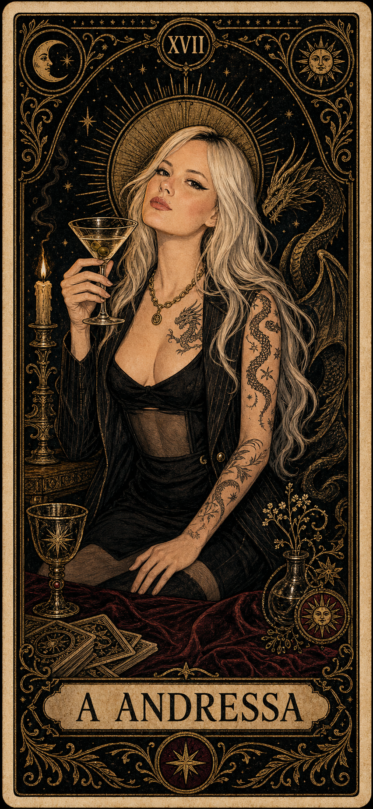
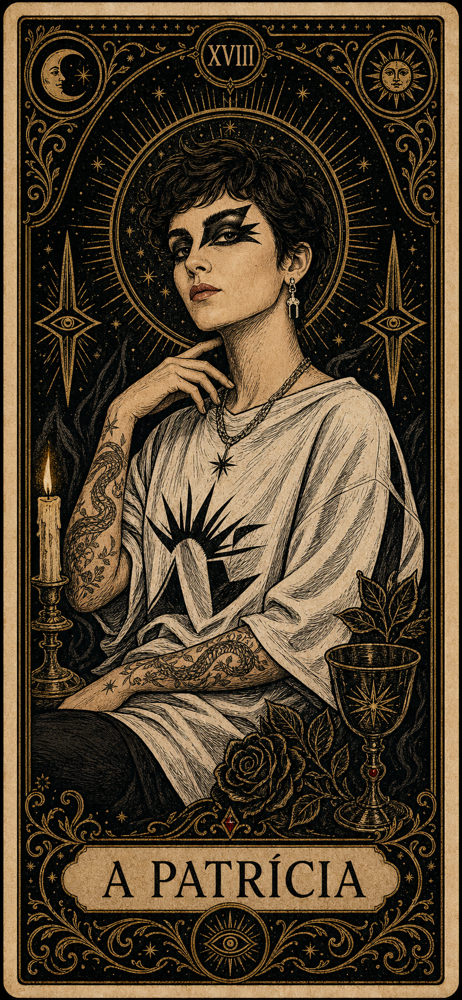
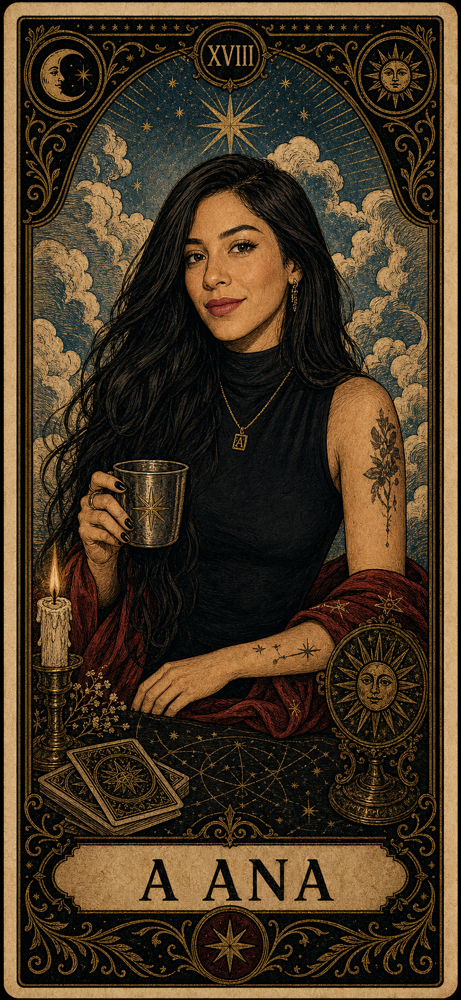
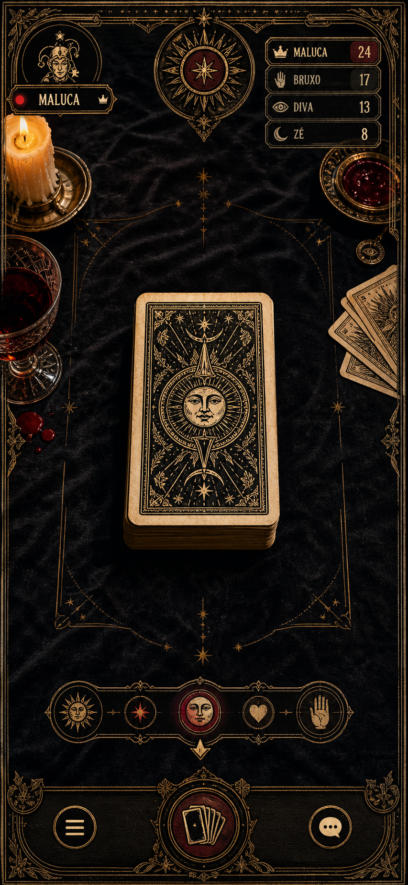
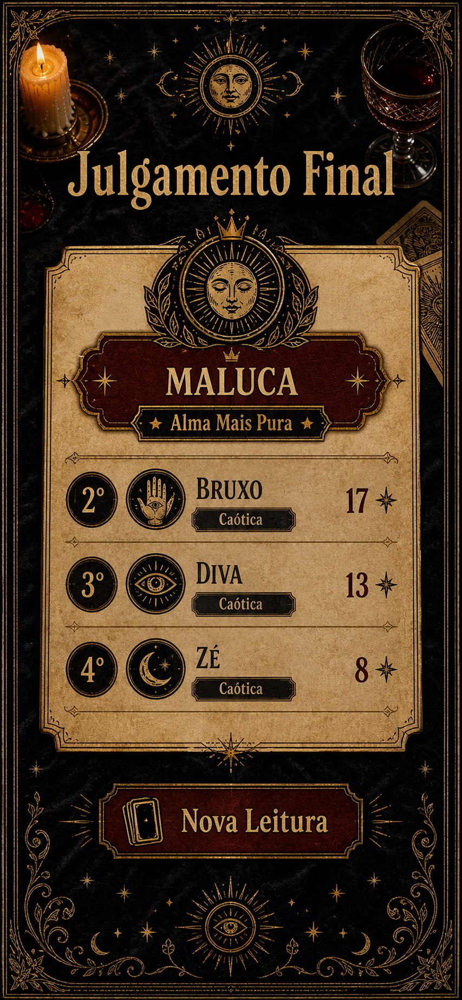

Tarô de Maluca
Cinco arcanos pessoais em linguagem de xilogravura, bruxaria de mesa e glamour ritual.
Coven visual

O círculo
Cada carta precisa parecer uma lâmina colecionável: retrato, atributo, borda e assinatura.

A Sabrina
A Shai
A Andressa
A Patrícia
A AnaBruxa punk-romântica
Jaqueta, gesto de paz, cristais e flores. A carta mistura deboche e doçura: uma presença que parece leve, mas entra na mesa como feitiço de atitude.
Paz, couro, caosBruxa da estrela e do espelho
Bolo, taça, brilho e pose de celebração. A Shai é o arcano da performance encantada: tudo nela parece festa, mas a composição segura uma aura cerimonial.
Doce, ouro, palcoBruxa da noite e do dragão
Martini, preto, tatuagem e postura de domínio. A carta tem energia de pacto sofisticado: a bruxa que observa, escolhe a hora e então sentencia.
Martini, dragão, controleBruxa da lâmina gráfica
Delineado forte, olhar frontal e signos de proteção. A Patrícia funciona como carta de corte: elegante, urbana, seca no traço e impossível de ignorar.
Olho, risco, presençaBruxa do presságio azul
Céu, caneca de metal e mesa astrológica. A Ana fecha o coven como sinal de leitura: calma por fora, cheia de mapa, vento e suspeita por dentro.
Céu, metal, oráculo

A apresentação vende a fantasia certa: um jogo de confissões que parece grimório, baralho e retrato de coven. A próxima etapa é transformar essa direção em assets consistentes para runtime.
Pronta para apresentar